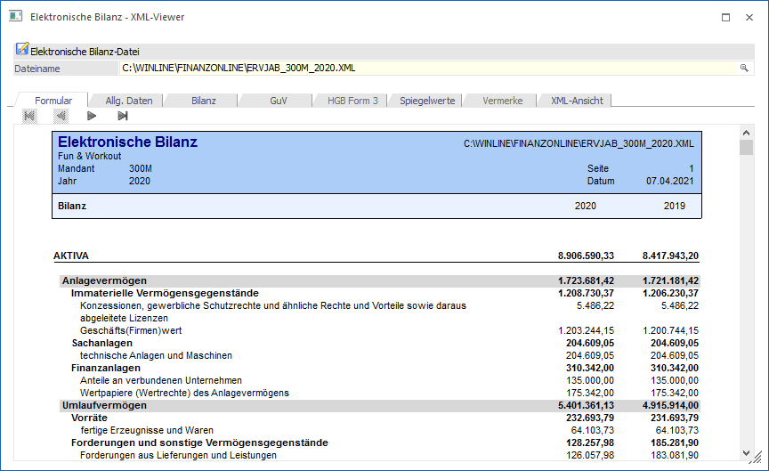

Der XML-Viewer befindet sich unter
1 Auswertungen
1 Elektronische Bilanz
1 XML Viewer
Mittels XML-Viewer kann eine E-Bilanz oder ERV-JAb Datei geladen und dargestellt werden. Dazu muss der Speicherpfad der Datei im Eingabefeld Dateiname eingegeben werden (mittels Matchcode, Drag & Drop oder manuell) und mit Enter bestätigt werden.

Dabei kann man unter verschiedenen Ansichten wählen:
Ø Formularansicht
Die Formularansicht zeigt die XML-Datei in einem leicht lesbaren PDF Format
Ø Allgemeine Daten
Hier werden die allgemeinen Daten (Informationen zum Wirtschaftsjahr, zum Unterzeichner, etc.) in Tabellenform angezeigt.
Ø Bilanz, GuV, Spiegelwert
Dieses Register zeigt alle errechneten Werte in Tabellenform.
Ø Vermerke
Alle im Schritt 4 hinterlegten Anhänge werden hier aufgelistet.
Ø XML-Ansicht
Hier wird der Inhalt der Datei in einem Browser-Fenster angezeigt.
Button
Ø Ende
Durch Drücken des Ende Button oder der ESC Taste wird das Fenster geschlossen.